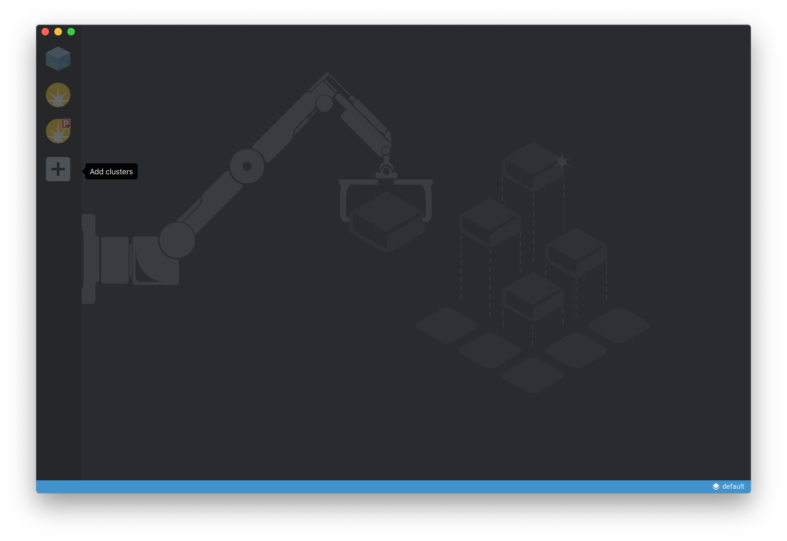
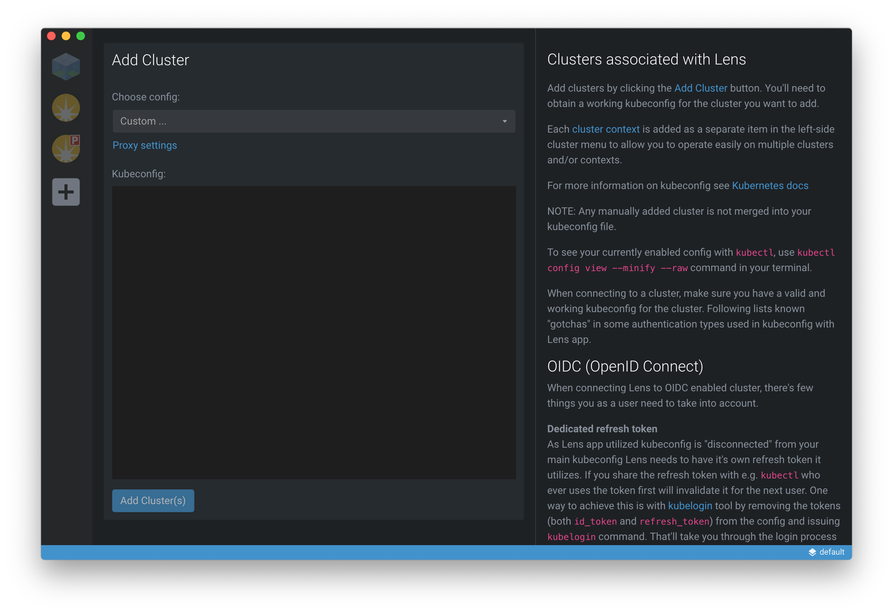
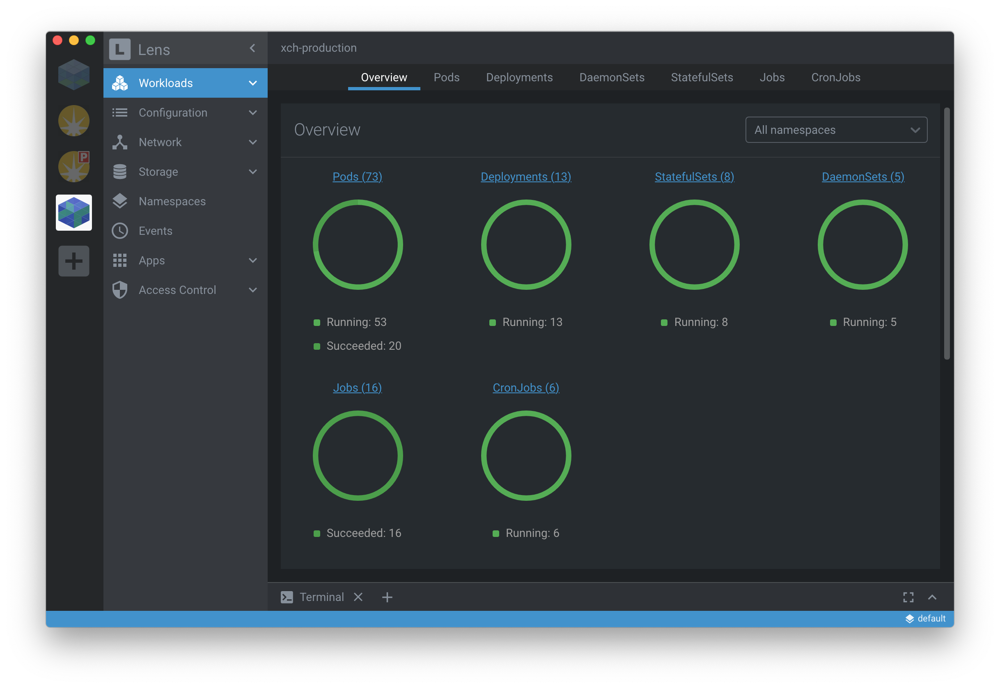

Preparing for lens¶
You will need to install lens, a neat community-driven IDE for Kubernetes, and then provide your kubernetes configuration file.
Installing lens¶
Refer to the lens website for installation instructions. You should install version 3.4 or better.
Provide your KUBECONFIG¶
The first time you start lens you will need to provide a cluster configuration.
Click the Add clusters icon in the application side-bar…
Then select Custom … from the Choose config: drop-down, and then paste the content of the kubernetes configuration file into the Kubeconfig: panel and then finish by clicking Add Cluster(s)…
If successful you should be presented with an overview of the cluster workloads (as shown below).
Now that you’re connected to the cluster through Lens you can quickly navigate to the Workloads (which includes Pods, Deployments, StatefulSets and Jobs), Configuration (for ConfigMaps, Secrets etc.), Network (for Services and Ingresses), Storage (so see PersistentVolumes and PersistentVolumeClaims) and Namespaces (to see all the namespaces).
Adding a cluster icon¶
If youwant to add a distinctive icon for the cluster yoy can. Simply right-click the exiting cluster icon in the side-bar and select Settings. Use the Browse for new icon… to select an icon of your choice.
Two icons can be found in this repository that can be used for the Development and Production clusters (whcih can be found in the project’s
lens/iconsdirectory).